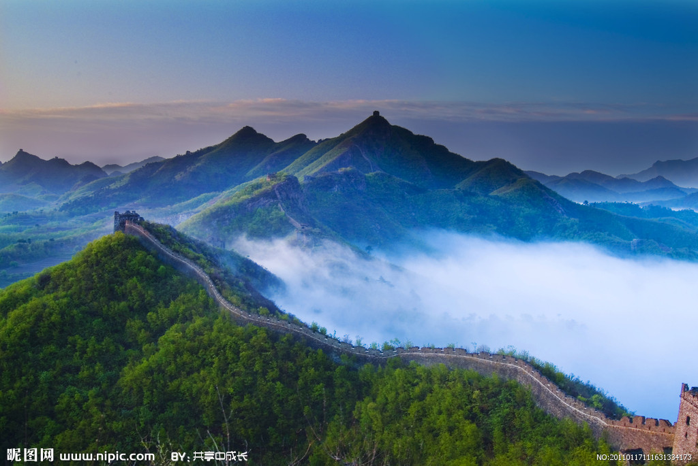
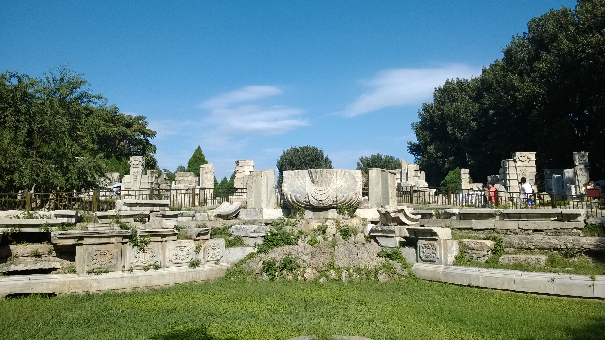

- Place to go!
- Forbidden City
- Great Wall
- The Old Summer Palace
Forbidden City, the place where many emperors lived and worked, the biggest one in the world, an emperor may have one thousand wifes who lived here together and can't easily leave this building. In this building, you can see thousands of antiques and scenario about how antient people live.


the Great Wall of China actually consists of numerous walls and fortifications, many running parallel to each other. Originally conceived by Emperor Qin Shi Huang (c. 259-210 B.C.) in the third century B.C. as a means of preventing incursions from barbarian nomads into the Chinese Empire, the wall is one of the most extensive construction projects ever completed
the Old Summer Palace, which are about the same size as Central Park in New York, date back to the 12th century. The interesting part of the history begins with Emperor Qianlong who was inspired by French and Italian palaces and had ten palaces of his own designed and built in rococo style in the gardens.
